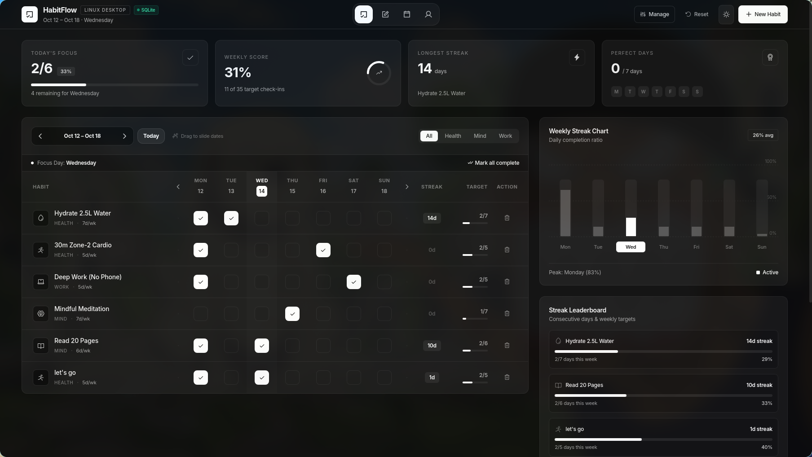

Quiet Consistency.
Zero Distraction.
The minimal monochrome habit and streak tracking operating system for Linux. Native WebKitGTK performance, real-time drag navigation, and date-accurate local persistence.
curl -sSL https://raw.githubusercontent.com/jasmin1727/habitflow/main/install.sh | bash
Installs application files, SQLite database, desktop shortcut & global habitflow command.

Try the HabitFlow matrix right here
Click any day cell below to log a check-in and feel the snappy responsiveness.
Built for speed, privacy, and permanence.
50 MB RAM Footprint
Unlike heavy Electron wrappers that devour 200MB+ memory, HabitFlow leverages the Linux system's native WebKitGTK 4.1 engine for instant launches.
Real-Time Drag Physics
Click and drag horizontally across dates. Day numbers and checkmarks physically follow your cursor with hardware-accelerated transform spring physics.
SQLite Database Storage
Your routines, logs, and dark/light settings are permanently stored in ~/.local/share/habitflow/habitflow.db. No browser localStorage limits.
Complete Habit Management
Dedicated action columns with confirmation dialogs protect your logs, while the centralized Manage modal lets you delete or review habits in seconds.
Full-Bleed Desktop Layout
Engineered for widescreen Linux setups, tiling window managers (Hyprland, Sway), and full-size desktop monitors without awkward side gutters.
100% Offline & Private
Zero accounts, zero trackers, zero cloud connections. Bundles local CSS and fonts. Your habits and life routines stay strictly on your local machine.
Clean Architecture, Zero Complexity
┌────────────────────────────────────────────────────────────────────────────────┐
│ HabitFlow Linux Desktop Architecture │
│ │
│ [ Frontend Viewport (WebKitGTK 4.1 Native Window) ] │
│ ├─ Tailored monochrome UI (Tailwind CSS engine) │
│ ├─ Real-time 60fps drag physics & gesture tracking │
│ └─ JavaScript API Bridge (window.pywebview.api) │
│ │ │
│ ▼ (IPC Method Invocation) │
│ [ Python Backend Engine (app.py) ] │
│ ├─ HabitFlowAPI bridge class │
│ ├─ Window lifecycle & desktop integration │
│ └─ BottleServer HTTP asset handler │
│ │ │
│ ▼ (Parameterized SQL Queries) │
│ [ Local SQLite Database Engine (database.py) ] │
│ ├─ habits (id, name, category, icon, target, base_streak, display_order) │
│ ├─ habit_logs (id, habit_id, log_date, completed) ── UNIQUE(habit_id, date) │
│ └─ settings (key, value) │
│ │ │
│ ▼ (Local Storage File) │
│ ~/.local/share/habitflow/habitflow.db (Safe across reboots & upgrades) │
└────────────────────────────────────────────────────────────────────────────────┘
Product Roadmap
Upcoming modules previewed in the top navigation bar:
v1.0 Linux Desktop Core
WebKitGTK window, SQLite storage, drag navigation.
Notes & Routine Journaling
Markdown daily scratchpad linked to your habit streaks.
Full-Month Heatmap Calendar
GitHub-style monthly and yearly consistency graphs.
Cross-Platform Distribution
Windows (.exe) and macOS (.dmg) standalone binaries.
We Welcome Contributors & Forks!
HabitFlow is 100% open source under the MIT License. Whether you want to help develop the upcoming Notes or Calendar Heatmaps, package an AppImage/Flatpak, or port to other platforms, your contributions are warmly celebrated.